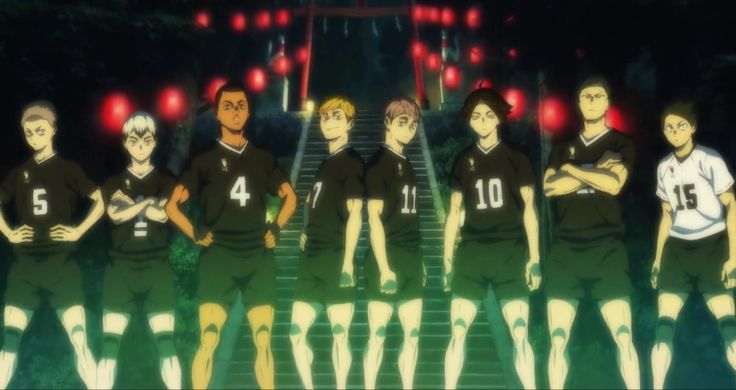
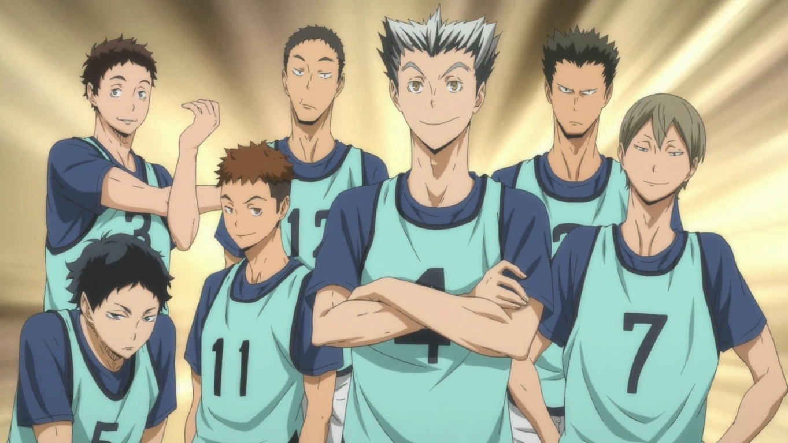

HAIKYUU
Karasuno High

O clube de vôlei masculino da escola foi fundado há muitos anos e costuma ser associado a corvos devido ao nome da escola. Na verdade, seu banner diz "Fly", que faz alusão aos corvos. Foi dito que o treinador Ikkei Ukai tinha uma feroz matilha de corvos durante os dias de glória de Karasuno. Como uma ex-potência de Miyagi, Karasuno representou a prefeitura no Spring High National Tournament nove vezes. Uma dessas ocasiões foi sob a orientação do treinador Ikkei Ukai e Tenma Udai , também conhecido como o "Pequeno Gigante" ("Pequeno/Pequeno Gigante" no anime), e ficou famoso em Miyagi. No entanto, após o sucesso inicial, Karasuno não conseguiu passar nas preliminares de sua prefeitura em torneios futuros e, portanto, recebeu os apelidos depreciativos de "The Fallen Champions" e "The Flightless Crows". Não foi até cinco anos depois que a equipe finalmente voltou aos nacionais. Por um tempo, Karasuno não teve treinador devido à internação de Ukai após alguns meses como treinador no ano anterior. Daichi Sawamura então assumiu as funções de capitão e treinador até que o neto de Ukai, Keishin Ukai , se tornou o novo treinador. Os gerentes da equipe consistem em Kiyoko Shimizu , um terceiro ano e gerente original, e Hitoka Yachi , um primeiro ano recrutado por Kiyoko após o primeiro torneio.
informações sobre o time
A escalação inicial principal é composta por Daichi Sawamura , Asahi Azumane , Ryūnosuke Tanaka , Yū Nishinoya , Shōyō Hinata , Tobio Kageyama e Kei Tsukishima . Karasuno é atualmente famoso por seu ataque rápido (realizado por Kageyama e Hinata) e seus membros únicos: "King of the Court" de Kitagawa Daiichi Junior High , Kageyama; O campeão líbero de Chidoriyama, Nishinoya; e a central de 164 cm de altura, Hinata. Os principais rivais de Karasuno na província de Miyagi são Aoba Johsai High , Date Tech High e Shiratorizawa Academy . O rival "destinado" do clube é Nekoma High , para o qual Karasuno sempre perdeu. Como seus representantes animais (gato e corvo) geralmente são encontrados na lixeira, suas correspondências são chamadas de "Batalha no depósito de lixo". (No anime é referido como 'The Trashcan Showdown.') O atributo mais forte de Karasuno é seu poder ofensivo, com forte foco em ataques como o ataque rápido, pipe-line e ataques sincronizados usando o tempo. Ele também utiliza técnicas incomuns como o Calculated One-Point Two-Setter, o saque jump float e um libero toss para despistar os oponentes.
partidas e titulos importantes
Eles venceram o Torneio de qualificação de Miyagi de 2012 contra Shiratorizawa e avançaram para o Spring
Nationals.
Chegando lá, eles conseguiram se classificar entre os 8 primeiros de todo o Japão depois de perder para
Kamomedai.
Eles ganharam duas participações consecutivas no Torneio nos dois anos seguintes. Em 2014, eles ficaram
entre os 16 primeiros depois de perder na terceira rodada para Inarizaki.
Em 2015, jogou na quadra central contra o Itachiyama nas semifinais e perdeu, ficando em terceiro lugar
no ranking nacional.
Inarizaki High
A equipe de vôlei masculino é uma potência de longa data que participou do Torneio da Primavera por três anos consecutivos e 31 vezes no total. São os vice-campeões do último Interhigh e o atual 2º seed. Eles derrotaram o top 3 do ranking nacional Wakatsu Kiryū e sua equipe Mujinazaka nas semifinais, antes de ganhar um set do eventual campeão Itachiyama . No ano anterior, Inarizaki terminou em terceiro lugar nos torneios Interhigh e Spring High
informações sobre o time
Eles são conhecidos por sua lista de jogadores habilidosos, como os irmãos Miya, e os 2 artilheiros de Inarizaki, Rintarō Suna e Aran Ojiro., que é considerado um dos cinco maiores ases do país. A equipe conquistou a reputação de "desafiantes mais fortes" por seu estilo de jogo não convencional e tendência a correr riscos. O lema da equipe é "Não precisamos de (coisas como) memórias" para significar não nos deixarmos abater por conquistas passadas e sempre assumir novos desafios. Já foi mencionado que o time de vôlei é extremamente popular, com os gêmeos Miya atraindo muitos torcedores. As partidas de Inarizaki geralmente são acompanhadas por sua grande orquestra e equipe de torcida, que desenvolveram uma técnica para distrair seus oponentes com ritmo e som.
partida e titulos importantes
Torneio Nacional Interhigh (2011)
Inarizaki perdeu nas semifinais e ficou em 3º lugar geral.
Semifinal
Torneio Nacional de Primavera (2012)
Inarizaki perdeu nas semifinais e ficou em 3º lugar geral.
Semifinal
Torneio Nacional Interhigh (2012)
Embora o placar completo não tenha sido revelado, é dito que Inarizaki derrotou Mujinazaka nas
semifinais, e que Inarizaki venceu um set contra Itachiyama na partida final. [2]
Semifinal
Inarizaki High School vs Mujinazaka High School
Final (ganhador)
Inarizaki High School vs Itachiyama Institute
Torneio Nacional de Primavera (2013)
No Nacional, Inarizaki foi o segundo cabeça-de-chave e foi dispensado do primeiro turno. Inarizaki
perdeu para Karasuno em uma partida de 3 sets.
Segunda rodada
Inarizaki High School vs Karasuno High School
A partida foi disputada na quadra B como a segunda partida do segundo dia na referida quadra. [2]
Torneio Nacional de Primavera (2014)
Terceira Rodada
Semifinal
Torneio Nacional de Primavera (2015)
quartas de final
Fukurōdani Academy
O time de vôlei masculino é atualmente um dos quatro melhores em Tóquio e o ás do time, Bokuto , é um dos cinco melhores do país, perdendo por pouco os três primeiros. Além disso, a equipe de vôlei foi para o Nacional em cada um dos últimos três anos, coincidindo com os anos de participação do craque. A equipe também chegou ao Torneio da Primavera um total de 28 vezes e chegou ao torneio sete vezes consecutivas. No Torneio da Primavera de 2013, eles conseguiram derrotar o Mujinazaka High , um time do Top 4, nas quartas-de-final e mais tarde terminaram como vice-campeões após perder para o Ichibayashi High
informações sobre o time
Os jogadores mais notáveis de Fukurōdani são Bokuto, o capitão e um dos 5 melhores ases do país, e Akaashi , levantador e vice-capitão do time. A equipe de Fukurōdani também é membro do Fukurōdani Academy Group, que é composto por equipes da região de Kanto. Durante anos, as escolas realizaram acampamentos de treinamento de verão e praticaram partidas umas com as outras. O representante oficial da escola é uma coruja, coincidindo com a aparência e o nome de Bokuto.
partida e titulos importantes
Playoffs representativos da Spring High-Tokyo (2012)
Depois de ficar entre os quatro primeiros durante as preliminares, Fukurōdani passou para os playoffs representativos realizados em meados de novembro.
Para os playoffs representativos, Fukurōdani jogou no Sumida City Gymnasium junto com Nohebi Academy , Itachiyama e Nekoma. Depois de perder para Itachiyama nas finais, eles se tornaram o Segundo Representante da Prefeitura de Tóquio para o Torneio de Primavera.
Semifinais
Fukurōdani Academy vs Nekoma High School
final
Fukurōdani Academy vs Itachiyama Institute (ganhador)
Torneio Nacional de Primavera (2013)
Para os nacionais, Fukurōdani não foi isento da primeira rodada.
Primeiro round
Fukurōdani Academy vs Eiwa High School
A primeira partida foi disputada na quadra E, pois é a quarta partida do dia.
Segunda rodada
Fukurōdani Academy vs Morikawa High
Terceira Rodada
Fukurōdani Academy vs Matsuyama Nishi Biz High
A terceira partida foi disputada na quadra C.
Quartas de Final
Fukurōdani Academy vs Mujinazaka High
A partida das quartas de final foi disputada na quadra C.
Semifinal
Fukurōdani Academy vs Inubushi Higashi High School
Final
Fukurōdani Academy vs Ichibayashi High
A partida foi disputada na quadra central. (ganhador)